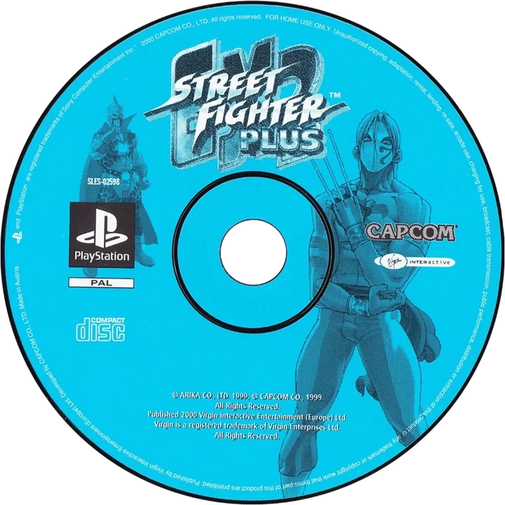
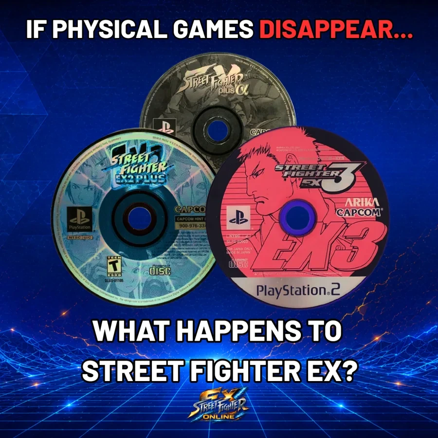

EX PLUS ALPHA
The original PlayStation EX.
ONLINE VIA ARKADYZJA
EX PLUS ALPHA
The original PlayStation EX.
ONLINE VIA ARKADYZJA
STREET FIGHTER EX ONLINE

A SIDE OF EX
YOU’VE NEVER SEEN.
High-level matches. Fighter guides.
Rare footage. Play EX Online.
New here? Pick a game, watch one of our featured sets, or jump straight to How to Play Online.
PICK YOUR GAME.
Three different sides of Street Fighter EX.
EX PLUS ALPHA
The original PlayStation EX.
ONLINE VIA ARKADYZJA

EX2 PLUS The competitive heartbeat. ONLINE VIA ARKADYZJA EX3
The rare PS2 chapter.
ONLINE VIA PCSX2
EX3
The rare PS2 chapter.
ONLINE VIA PCSX2
Watch EX online
Start with a match.
Hand-picked sets from EX Plus Alpha, EX2 Plus and EX3.
MasterFighterX vs Cahit
Short, sharp and one of the strongest matches in the SFEXOnline archive.
WHY THIS MATCH
A short, sharp first taste of EX Plus Alpha online.
From the timeline
SCENE PULSE
The useful, fun and important things moving through the SFEXOnline timeline. Curated by us.
EX2 PLUS • SOFA #529
SPAIN'S EX SCENE
VIDEO ON X ↗
EX2 Plus tournament play in Spain.
FA Pain33’s Kairi lands a 30-hit Meteor Beam on LG Raiden in the Winners Final of SOFA #529, hosted by The Next Battle.
VIEW ON X ↗
EX DISCOVERY
DARUN MISTER?
VIDEO COMPARISON ↗
Did Marvel Tōkon reference Darun Mister?
@snockhit spotted a striking similarity between Deadpool’s Fever Dream and Darun’s EX3 upward hit, so we lined the two moves up.
VIEW ON X ↗
What happens if the EX discs disappear?
EX Plus Alpha, EX2 Plus and EX3 have never had a proper digital re-release, which makes ageing PlayStation hardware part of EX preservation.
VIEW ON X ↗Go deeper
Find your way into EX.
How to Play Online
PLAY STREET FIGHTER EX ONLINE
Start with the current ways people are playing the three main EX games online.
EX PLUS ALPHA ONLINEARKADYZJA
EX2 PLUS ONLINEARKADYZJA
EX3 ONLINEPCSX2
NEVER FINISHED.
NEVER FORGOTTEN.
Street Fighter EX never got the revival it deserved, but the people who love it never stopped showing up.
SFEXOnline exists to make the EX scene easier to find, preserve what came before us and help more people discover, watch and play EX today.
The SFEXOnline Dispatch
Get the latest EX matches, interviews and guides right in YOUR inbox.
YOU’RE IN.
Check your inbox to confirm your subscription.
Stay connected without relying on the timeline.

LATEST DISPATCHISSUE 001READ THE LATEST →